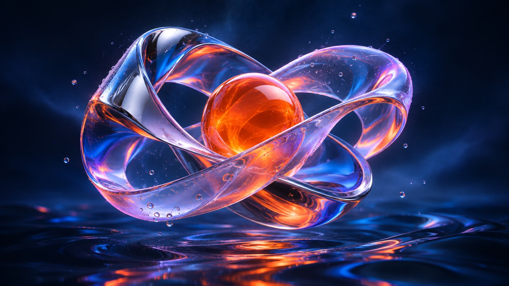

INTERACTIVE MEDIA EFFECTS / ZERO DEPENDENCIES
Still images.
New energy.
STILL IMAGE / LIVE EFFECTSPRISMA — 001

SLOW ZOOM + SIGNAL + FILM GRAINMove your cursor. Discover another layer.48 SEC / SEAMLESS LOOP
Explore the playground
Bring your stills to life.
Layer motion, texture, and light.
Make it your own.
Choose your media. Compose your effects. Find your signature.
01 / RETRO TV LIVE PREVIEW
Move your cursor. Follow the light.
Use this composition Code & integration
A FEW LINES. THEN IT MOVES.
Fits your stack.
Leaves a small footprint.
Native JavaScript. Selective imports. Accessible media stays in the DOM. Built for the expressive web.
Build an effect with your agentJAVASCRIPT
SMALL FOOTPRINT / MEASURED IN THE OPEN
More expression.
Less overhead.
4.9 kBCore + film grain · gzip
10.6 kBAll 25 effects · gzip
8.3 msMedian frame interval · M1 Pro
0Runtime dependencies
Selective imports. Reused video textures. At most two intermediate textures for a composition.
Chrome 156 · Apple M1 Pro · ten image/video runs, 120 sampled frames each. Frame intervals measure browser scheduling, not GPU execution. Results vary by device, resolution and effect.
Explore the measurements & run your own